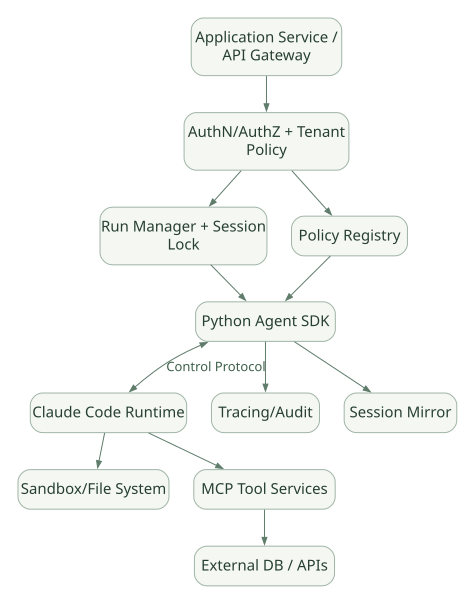

SECOND STUDY / 서비스 설계와 기술 비교
서비스 설계와 기술 비교
이번 단원의 읽는 관점
인증·세션 소유권·격리·비용·관측과 Runtime 재사용의 Trade-off를 비교합니다.
살펴볼 경계기능 개수보다 Loop 소유권과 공개·변경 가능한 통제 경계를 보세요.
이 페이지의 세부 목차
Part VII. 실제 Framework 개발 관점의 설계 평가
41. 직접 Agent Framework를 만든다면 필요한 컴포넌트#
Claude Agent SDK를 분석할 때 가장 중요한 교훈은 '에이전트가 있다'는 기능적 설명보다 별도 프로세스·Protocol·Execution·Policy·Persistence의 경계를 어디에 두었는가이다.
가로로 이동해서 읽을 수 있습니다. 도식 크게 보기 ↗

원문의 학습용 도식입니다. 연결 방향·분기 조건·점선·쌍방향 연결을 보존해 세로로 배치했습니다. 실제 구현·의사코드·해석의 구분은 본문을 함께 읽으세요.
도식 원문 보기 (Mermaid)
flowchart TB
APP[Application Service / API Gateway] --> AUTH[AuthN/AuthZ + Tenant Policy]
AUTH --> RUN[Run Manager + Session Lock]
RUN --> SDK[Python Agent SDK]
SDK <-->|Control Protocol| CLI[Claude Code Runtime]
SDK --> OBS[Tracing/Audit]
SDK --> STORE[Session Mirror]
CLI --> FS[Sandbox/File System]
CLI --> MCP[MCP Tool Services]
MCP --> DATA[External DB / APIs]
AUTH --> POLICY[Policy Registry]
POLICY --> SDK41.1 여덟 가지 설계 책임#
| 책임 | Claude Agent SDK에서 확인되는 분리 | 자체 개발 시 질문 |
|---|---|---|
| Agent Loop | CLI 내부 [DOC] | 자체 Runner와 상태 기계를 만들 것인가? |
| Transport | Python subprocess transport [SRC] | IPC, HTTP, message queue 중 무엇인가? |
| Tool Registry | CLI + MCP catalog | Tool 동적 발견과 스키마 캐시는? |
| Permission | Rules + Hooks + callback | fail-open/closed와 직접 강제 지점은? |
| Session | 로컬 transcript + store mirror | 누가 저장의 원본인가? 동시 쓰기는? |
| Memory/Context | CLI compaction + files | 컨텍스트 안정성·정보 손실 관리는? |
| Subagents | CLI orchestration | 작업 큐, 동시성, 결과 집계, 예산은? |
| Serving | Python 앱이 SDK 실행 | 사용자 격리, timeout, scaling, 관측은? |
41.2 'SDK를 쓴다'와 '내 Agent를 완전히 제어한다'의 차이#
CLI에 의존하는 구조는 개발자가 Tool, Hook, 모델 옵션, Subagent 정책 등을 설정할 수 있다는 뜻이지, 내부 Token packing, 모델 재시도 알고리즘, Scheduling을 직접 바꿀 수 있다는 뜻이 아니다. 커스터마이징 가능 범위를 (A) 안정된 공개 API, (B) Hook/MCP 확장, (C) CLI 내부 변경 불가 세 그룹으로 나눠 평가한다.
42. 서버 Serving·동시 요청·세션 소유권#
42.1 API Server는 SDK가 대신 만들어주지 않는다#
Python 서비스는 클라이언트 인증·상태 코드·대기열·WebSocket/SSE·Timeout·권한 승인 UI 등을 직접 만든다. SDK는 Runtime 호출과 메시지 흐름을 제공한다. [DOC: D11]
HTTP POST /runs
→ Request validation / tenant auth
→ Run ID 생성 / quota check
→ Worker에 Run 전달
→ Worker: ClaudeSDKClient 연결 / CLI spawn
→ SDK StreamEvent/AssistantMessage/ResultMessage 수신
→ SSE 또는 job log로 변환
→ 세션·감사·최종 상태 저장42.2 여러 사용자가 호출할 때 결정할 것#
- 워커별 CLI 프로세스 수의 상한은?
- 하나의 세션을 여러 요청이 동시에 resume할 수 있는가?
- 파일 시스템 작업 디렉터리를 사용자별·실행별로 격리하는가?
- 하나의 MCP Server가 다른 사용자 자격증명으로 오염되지 않는가?
- 대기열에 들어간 Job과 이미 시작된 CLI의 취소 방법은 같은가?
- 연결 종료가 정상 Result인지, 인프라 장애인지 어떻게 구분하는가?
권장: 한 세션의 상태 업데이트는 기본적으로 한 작성자에게 직렬화하고, 병렬 처리하려면 fork나 명시적인 공유 데이터 모델을 사용한다. [INF]
43. 가드레일 위협 모델 — Prompt Injection과 실행 권한#
43.1 공격 표면#
- 사용자 입력: 사용자 자신이 권한을 갖는지 확인 필요.
- Tool Output: 외부 검색·README·로그·MCP 응답에 악의적인 지침이 섞일 수 있음.
- Skill Files: 재사용 지침처럼 보이는 공급망 공격.
- MCP Tool: 서버가 지나치게 넓은 DB·네트워크 권한을 가질 수 있음.
- CLI 실행 환경: 워킹 디렉터리 외 민감 파일과 네트워크 접근.
- Session Store: 민감 대화 기록·Tool 결과의 장기 저장 및 오남용.
43.2 적절한 최소 권한 구조#
- 모델 Instruction: 원하는 행동과 금지된 행동을 설명.
- Tool 노출 정책: 필요 없는 Tool은 제거/제한.
- Permission Deny·Hook: 위험한 Tool 인수와 작업을 실행 전에 차단.
- Sandbox: 쓰기 가능한 경로·네트워크 아웃바운드 최소화.
- MCP IAM: 데이터별 사용자 인가 및 감사.
- 외부 실행 Wrapper: SQL read-only, API idempotency, 명령 검증.
- 별도 Reviewer: 결과의 근거·정확성 확인.
위의 각 계층은 서로 대체 불가능하다. allowed_tools=['Read']만으로 '안전한 읽기 전용 Agent'라고 단정하지 않는다. [DOC: D03, D12]
44. 성능·비용·컨텍스트의 실제 Trade-off#
| 선택 | 유리한 점 | 손실·위험 |
|---|---|---|
Persistent ClaudeSDKClient |
프로세스 재기동·세션 재초기화 부담 감소 | 누수·수명·동시성·오래된 자격증명 관리 |
매 요청 query() |
격리·운영 로직 단순 | 시작 비용·서버 리소스 증가 |
| Tool Search | 전체 MCP 스키마의 초기 Context 부담 완화 | 검색 자체 지연 및 누락 가능성 |
| 짧은 Skills 설명 | 필요한 지식만 늦게 로딩 | 잘못된 Skill 선택/미선택 위험 |
| Subagent | 큰 작업 Context 분리, 분업 | 별도 비용·동기화·중복 실행 |
max_turns |
상한을 통한 폭주 억제 | 충분하지 않은 Turn에서 미완성 종료 |
max_budget_usd |
비용 상한 의도 표현 | 모델 응답 이후 집계로 초과 가능 |
| Compact | 오래된 Context 비용 절감 | 요약으로 인한 정보 손실 |
측정 없이 주장하지 않을 것: 특정 구조의 Token 절감률, 동시성 처리량, 평균 latency, 비용 감소 비율. 이번 문서는 정적 설계 분석이며 실측 자료가 아니다.
45. 다른 여섯 기술과의 내부 설계 비교#
이 비교는 서로 다른 프로젝트를 단일 '성능 순위'로 환산하지 않고, 누가 Loop를 소유하고 어느 계층에 제어권이 있는가를 중심으로 한다.
| 기술 | Agent Loop 소유 | 핵심 실행 구조 | 개발자가 제어하는 대표 경계 | 강점·한계 |
|---|---|---|---|---|
| Claude Agent SDK | 별도 Claude Code CLI | Python Wrapper + Control Protocol | SDK options, Hooks, MCP, SessionStore | 완성형 Harness 활용, 내부 엔진 비가시성 |
| Claude Code | CLI Harness | 내장 도구·세션·Skills·Subagents | 설정·Hooks·Plugins·MCP | 완성형 UX, 프로그램 연동은 SDK 경유 |
| Hermes Agent | 공개 Python Agent Runtime | 직접 Agent Loop·Tool Registry | 소스·Tool·Memory·Scheduler | 내부 수정 자유도, 운영 책임 증가 |
| OpenAI Agents SDK | Python Runner | Model/Tool/Handoff 루프 | 코드·Guardrails·RunState | 경량 Runner, 별도 환경·권한 설계 필요 |
| PydanticAI | Python 내부 Graph | Typed dependencies·Tool·Output validation | Node/Tool/Validator/Harness | 타입·검증 중심, 환경 운영은 직접 설계 |
| Google ADK | Runner / LLM Flow / Workflow | Event·Session·State 기반 | Agent·Plugin·Workflow | 명시적 이벤트/상태 모델, 복잡성 증가 |
| Microsoft Agent Framework | Agent Pipeline + Workflow | Middleware / FunctionInvocation / Superstep | Pipeline·Executor·Checkpoint | 기업 워크플로 제어, 학습 표면 넓음 |
이 표는 각 프레임워크의 핵심 아키텍처를 비교하기 위한 요약이다. 제품 버전·언어별 지원 범위를 완전히 동일하게 맞춘 기능 지원표가 아니므로 'Memory 지원: O/X'처럼 단순 비교하지 않는다.
45.1 구체적인 설계 논쟁 다섯 가지#
논쟁 A — Agent Loop를 SDK 앱에 둬야 하는가, 별도 CLI에 둬야 하는가?
- 별도 CLI: 기존 Harness 기능 재사용, SDK 업데이트와 Runtime 버전 불일치/프로토콜 비용.
- 내장 Python: 코드 수정·단위 테스트 쉬움, Runtime 개발·유지보수 직접 부담.
논쟁 B — Human Approval은 어디서 받아야 하는가?
- SDK callback: UI와 연결하기 쉽지만 자동 승인 호출을 모두 가로채지 못함.
- 외부 Tool 서버: 강한 데이터 권한 통제 가능, 사용자 UX에 별도 연결 필요.
- 둘을 결합: Tool 실행 전 식별자·인가 확인 + SDK UI 승인.
논쟁 C — SessionStore와 Checkpoint는 같은가?
- Claude SDK: Transcript mirror와 File Checkpointing은 별도이고 일부 조합 제약.
- 명시적 Workflow 프레임워크: Node state checkpoint 지원하지만 외부 부작용 보장은 별도.
논쟁 D — Multi-Agent의 병렬화는 누구의 책임인가?
- Claude SDK: Subagent 정의는 전달, 실제 스케줄러는 CLI Runtime.
- PydanticAI/ADK/MS Framework: 사용자 코드 또는 Framework 공개 계층에서 동시 실행 흐름을 더 직접적으로 제어할 수 있음.
논쟁 E — Tool 보안은 어디서 enforce할까?
- Hook: 빠른 커스터마이징·감사.
- Sandbox/IAM: 모델과 Hook 오류에 무관한 하드 제약.
- 정확한 요구: 둘 다 필요.